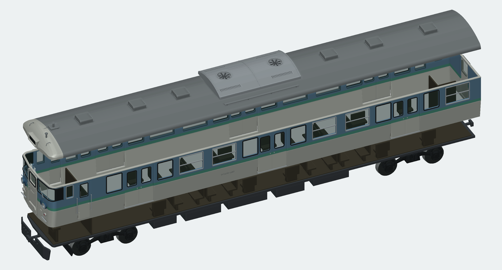
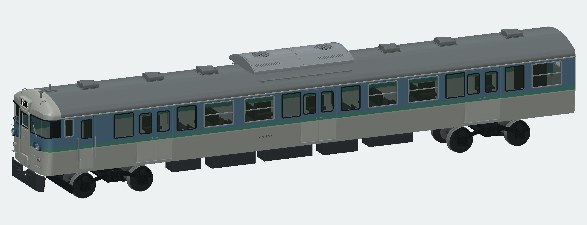
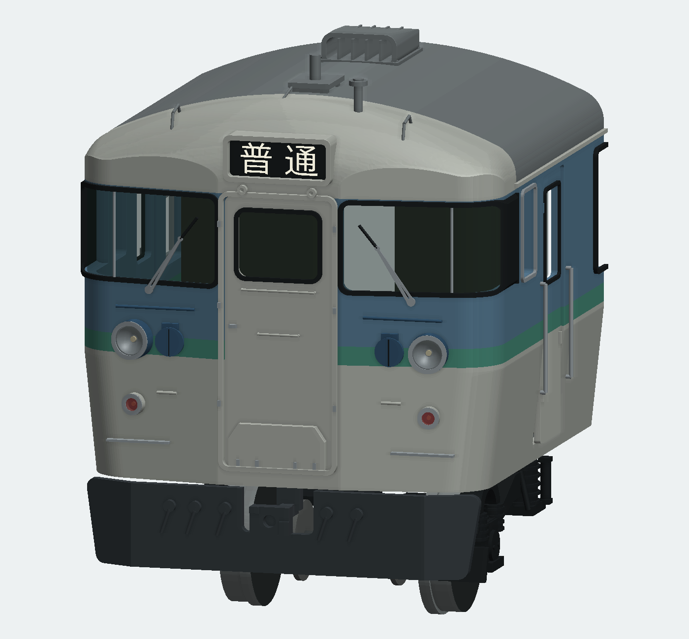
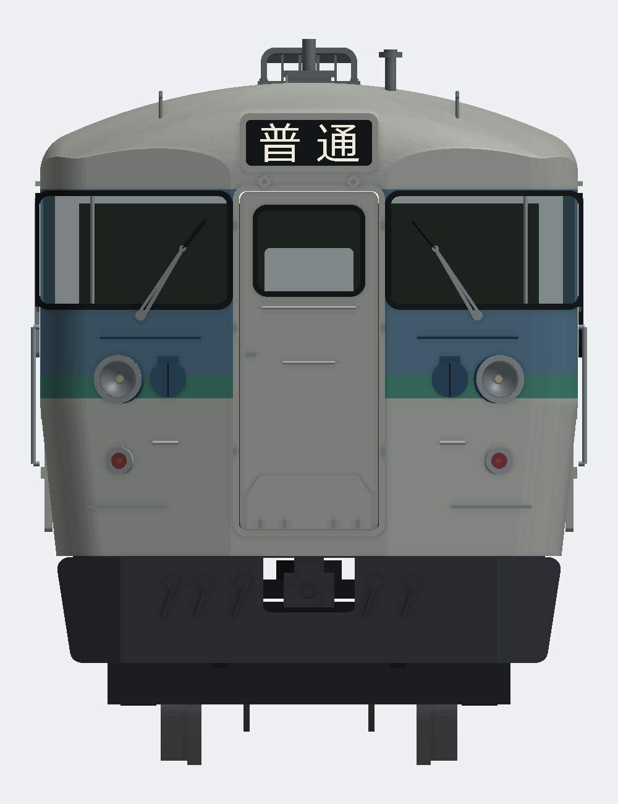
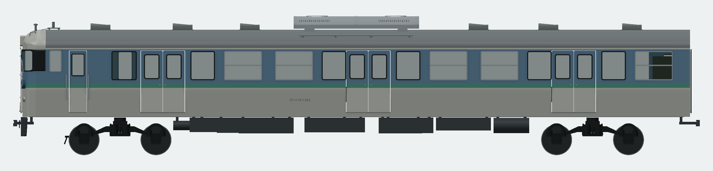
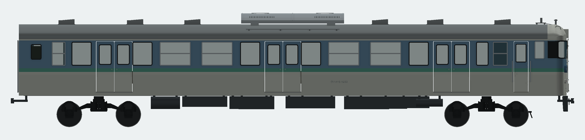
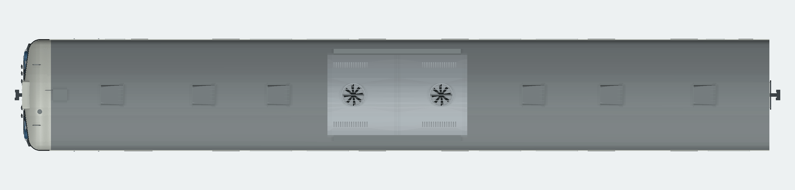
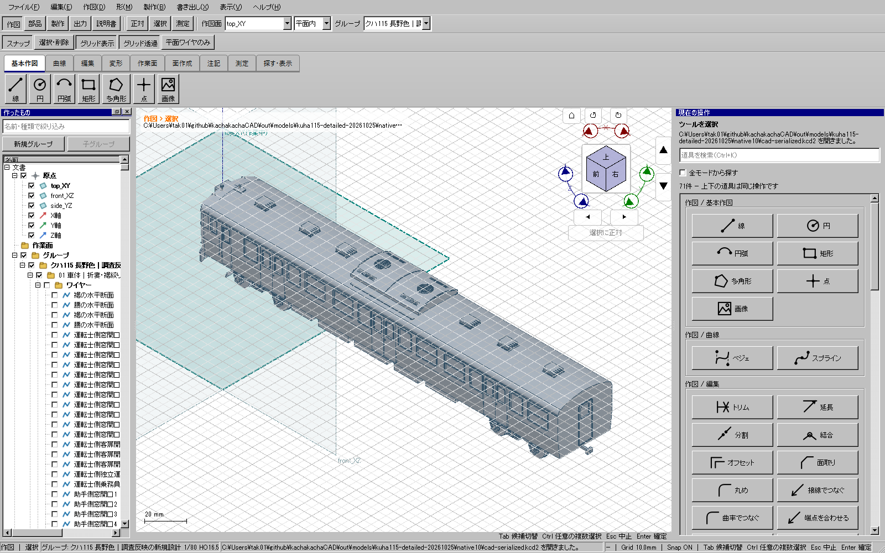

台車と部位別構成


台車はTR62系の構造を模型化。部位グループごとに表示・編集・出力できます。実走行と市販輪軸の互換は未試験です。
前面ガラス・灯具・屋根機器・スカート・台車を写真照合して改訂。貫通扉窓は横長を維持。開口7.2×5.8 mm、幅/高さ1.241。Hゴム・ガラスも同じ輪郭に合わせました。寸法は写真による模型設計値です。



扉全高22.9 mmと窓の高さを独立に設定。浅い折妻・回込窓・銀色縦桟・Hゴム・裾絞りを反映しました。
上：運転士側／中：助手側／下：屋根。各画像の縮尺は統一していません。




台車はTR62系の構造を模型化。部位グループごとに表示・編集・出力できます。実走行と市販輪軸の互換は未試験です。

配布済みWindows CADの通常起動で保存済みモデルを表示した実画面。色名は製作属性に保持し、この画面では塗装レンダリングと同じ塗り分けをしていません。
| 版 | 部品 | 指定干渉組 | 検査点 | 全対の候補組 | 分割再組立 |
|---|---|---|---|---|---|
| full | 233 | 169 | 314 | 319 | 0 |
| split | 240 | 319 | 314 | 327 | 6 |
全BRep・全STEP再読込・全STL閉鎖性を確認。全対の候補はAABBから抽出し実形状で検査しました。通常版は保存後の再読込でも全可視部品の形状を比較しました。
局所寸法と床下機器の同定には推定が残ります。特定車番の実測復元、実印刷済み、走行検証済みという主張はしません。詳細はREADMEに記録しました。
分割版は最大部品寸法125 mm未満。STLは部品ごとのベッド原点、STEPは組立座標です。